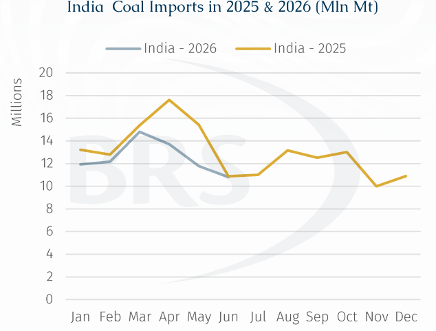
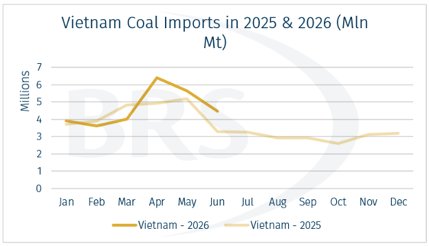
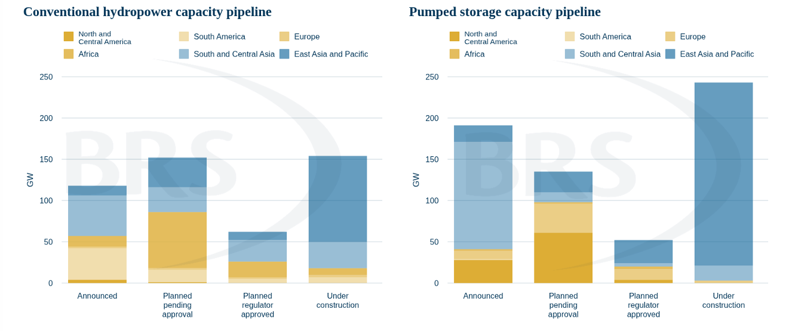

The rise of Hydroelectric Power and The Start of El Nino Season
Since late February, escalating tensions stemming from the Middle Eastern conflict have significantly disrupted global energy flows. Oil and natural gas exports from the Middle East Gulf have declined following the disruption to the Strait of Hormuz, while traffic through the Bab al-Mandeb Strait has also been constrained by Houthi attacks. Given that the Middle East Gulf accounts for more than 20% of oil and natural gas global exports, these disruptions have tightened global energy supply and heightened energy security concerns.
In response, several countries have sought to diversify their power mix by accelerating renewable energy deployment while maintaining coal-fired generation as a reliable source of baseload supply. Hydropower has played a particularly important role due to its operational flexibility, enabling power systems to respond rapidly to fluctuations in electricity demand and the intermittency of other renewable supply.
However, the outlook remains constrained by adverse weather conditions. The ongoing El Niño phenomenon has brought prolonged droughts and above-average temperatures across several regions, while delayed and below-average monsoon rainfall has reduced reservoir levels, constraining hydroelectric generation. In some affected areas, hydropower output has fallen by more than 80% from normal operating levels, thereby increasing reliance on thermal power generation.
India and Vietnam highlight the differing impacts of adverse weather conditions on regional power systems at the start of the El Nino season. In India, delayed and below-average monsoon rainfall reduced reservoir levels, contributing to an estimated 6.3 GW y-o-y decline in hydroelectric generation capacity and increasing reliance on coal-fired generation, with additional fuel requirements largely met by domestic production. In contrast, S&P Global report that Vietnam experienced an estimated 4.6 GW y-o-y decline in June. More broadly, official data indicate that hydropower’s share of the country’s electricity generation mix fell from 23.4% in 1H25 to 21.0% in 1H26, highlighting its reduced contribution to electricity supply and reinforcing coal’s role in the country’s generation mix.
Coal Fills the Hydropower Gap
To safeguard energy security and maintain reliable electricity supply, several Asian countries have increased their reliance on coal-fired generation as hydropower output has weakened. This adjustment has been supported by the region's extensive coal-fired power infrastructure, allowing utilities to respond quickly to supply shortfalls. Consequently, coal has remained a key component of the regional power mix, supporting thermal coal consumption and, in some countries, seaborne import demand.

In India, declining hydropower availability has increased reliance on coal-fired generation. Nevertheless, the additional fuel requirement has largely been met through domestic coal output and inventory drawdowns rather than higher imports. According to India's National Power Portal, total coal inventories have declined by almost 10mn tonnes since the onset of the delayed monsoon in June. Meanwhile, stocks at power plants have fallen to approximately 12. days of consumption. The inventory draw indicates that stronger thermal generation is placing additional pressure on the domestic coal system. However, unless stocks fall further or domestic production and rail deliveries prove insufficient, the immediate upside for Indian seaborne thermal coal imports should remain limited.
In contrast, Vietnam’s (EVN) hydropower's share of electricity generation fell from 23.4% (36.5 bln kWh) in 1H25 to 21.0% in 1H26 (10 bln kWh), while overall power demand continued to expand. according to AXSMarine data, Vietnam’s seaborne coal imports increased by 9% y-o-y during 1H26, suggesting the continued reliance on imported coal which was ultimately earmarked for electricity generation. Therefore, coal-fired power generation increased to 93.44 bln kWh in 1H26, accounting for 54.5% of total electricity generation, compared with 84.6 bln kWh and a 54.3% share in 1H25.

Consequently, stronger coal import demand supported additional employment for Panamaxes and Supramaxes transporting Indonesian and Australian cargoes into Southeast Asia, thereby underpinning Pacific basin trade. Nevertheless, Supramax demand has remained temporarily subdued due to weather-related disruptions and increased bunker prices. More specifically, higher bunker prices have emerged as a key cost pressure for the shipping sector, contributing to firmer freight rates and, consequently, higher delivered coal prices. Nevertheless, the Indian government’s coal procurement strategy remains primarily price-driven, with purchases focused on securing coal from the most competitively priced sources available.
The near-term outlook remains weather dependent. Current forecasts indicate that El Niño is likely to strengthen through the remainder of 2026, maintaining downside risk to reservoir inflows and hydropower generation. However, the effect will vary by basin and country, requiring close monitoring of rainfall, reservoir storage and power demand rather than assuming a uniform regional outcome.
The future of the Hydropower capacity and Coal

Source: International Hydropower Association Report, 2026
Looking ahead, hydropower capacity across Asia is expected to continue expanding as governments accelerate renewable energy deployment and strengthen long-term energy security. According to the International Hydropower Association (IHA), Southeast Asia is projected to account for a significant share of future capacity additions, with Vietnam among the key growth markets, while India continues to expand its hydropower and pumped-storage pipeline to improve grid flexibility and support the integration of renewable energy. However, hydropower generation will remain inherently dependent on rainfall patterns and reservoir levels, leaving output vulnerable to recurring climate events such as El Niño and periods of below-average monsoon rainfall. Consequently, despite continued investment in renewable energy infrastructure, coal-fired generation is expected to retain an important role in providing baseload supply and system flexibility during periods of reduced hydroelectric output.
From a dry bulk shipping perspective, this dynamic is expected to periodically support seaborne thermal coal demand, particularly for Indonesia- and Australia-origin cargoes destined for South and Southeast Asia. In the shorter term, Indonesia and Australia are expected to remain key suppliers to major Asian importers, including India and China, supporting primarily Panamax and Supramax employment across routes such as P5, S2, S8 and S10, with freight rates currently ranging from the mid-teens to low $20,000s/day, albeit with relatively limited tonne-mile upside from shorter regional trades. Over the longer term, continued expansion of hydropower and other alternative sources of electricity generation is expected to gradually reduce coal import requirements, placing structural pressure on seaborne coal demand. Nevertheless, recurring weather-related disruptions, including El Niño-driven droughts and periods of below-average monsoon rainfall, could temporarily constrain hydropower output and trigger renewed reliance on coal-fired generation, providing periodic support to seaborne coal volumes and dry bulk vessel demand.